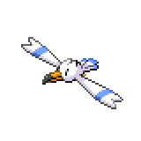

East Gearen City (Left)
East Gearen City (Left) - Outside

| Item | Location |
Gourmet Treat |
Above Optimist Talia |
Oran Berry |
By Charmer Derek |
Oran Berry |
Between Yukata Girl Shakotal and Enthusiast Lacey |
Elemental Seed |
Little alcove top left of Gearen Lab |
Resist Wing |
Little alcove top left of Gearen Lab |
Super Repel |
Leaflet Park - Left Side |
Escape Rope |
Leaflet Park - Left of the building |
Blue Shard |
Leaflet Park - Right of the building |
Grass Gem |
Leaflet Park - By the ranger's bench |
| Grass Gem |
Leaflet Park - Right of Schoolgirl Zara |
Gourmet Treat |
By the dumpsters up the first set of stairs |
Yellow Shard |
By the dumpsters up the first set of stairs |
Yellow Shard |
By the dumpsters on the right side up the second set of stairs |
Red Shard |
Above the grandma in the Station Area |
Super Potion |
Below the station in the Station Area |
Welcome to East Gearen City, full of trainers to battle, Pokemon to catch, and items to get. Right along the sidewalk you'll find small patches of grass where wild Pokemon can appear. Directly to the left of the crossroads is Velvet Building. We will explore the aparment buildings later. If you choose to take the left path, you'll meet Optimist Talia,
 who will challenge you to a battle. Continuing along the left path will take you to
Youngster Kaleb.
who will challenge you to a battle. Continuing along the left path will take you to
Youngster Kaleb. Crossing the bridge will result in battle with three Pokemon in the level 10+ range, so if you're not prepared, turn back and head over to the right side of the lab.
Crossing the bridge will result in battle with three Pokemon in the level 10+ range, so if you're not prepared, turn back and head over to the right side of the lab.
Going this way, you'll have to battle Charmer Derek.
 From there, you'll find yourself at a three-way intersection. Going right will put you against
Enthusiast Lacey,
From there, you'll find yourself at a three-way intersection. Going right will put you against
Enthusiast Lacey, while if you go north you'll battle Yukata Girl Shakotal.
while if you go north you'll battle Yukata Girl Shakotal. From there, if you keep walking left and you'll soon find yourself in front of Leaflet Garden.
From there, if you keep walking left and you'll soon find yourself in front of Leaflet Garden.

Right in front of the garden you can battle Mistress Nadine,
 and inside the garden, Schoolgirl Zara
and inside the garden, Schoolgirl Zara will challenge you to a battle. The Pokemon you can catch in Leaflet Park are the same as the rest of East Gearen City, but there are a few hidden items you can get. There's a few hidden items scattered around here.
will challenge you to a battle. The Pokemon you can catch in Leaflet Park are the same as the rest of East Gearen City, but there are a few hidden items you can get. There's a few hidden items scattered around here.
There's not much left to do in the garden, so leave through the right exit and head up the stairs. There's a few hidden items and buildings up here. The brown building is Magnolia Library, which costs
 300 to enter. To the left of the library is the Gearen Help Plaza, where we can accept sidequests. The sidequests will be covered
here. For now, we'll explore some of the other buildings in this side of the city.
300 to enter. To the left of the library is the Gearen Help Plaza, where we can accept sidequests. The sidequests will be covered
here. For now, we'll explore some of the other buildings in this side of the city.
Emerald Building

There are three apartment buildings that are explorable in this area. The Emerald Building is directly to the right of Leaflet Park. You may find a Nidoran (F) next to the building, so if you want to you can start the sidequest. Regardless of if you do, enter the Emerald Building. Clerk Andrew
 is blocking the elevator, but if you defeat him he'll move out of the way. The first floor is the office of the S.S. Oceana that you were on, and they are overwhelmed by the press at the moment. There's an Iron on the top right, which can be used or sold for a high price. The old lady strolling around will give you a Max Repel.
is blocking the elevator, but if you defeat him he'll move out of the way. The first floor is the office of the S.S. Oceana that you were on, and they are overwhelmed by the press at the moment. There's an Iron on the top right, which can be used or sold for a high price. The old lady strolling around will give you a Max Repel. You can also battle Clerk Henry.
You can also battle Clerk Henry.
On the second floor of the Emerald Building, the red-haird woman on the top left will give you a Full Heal.
 All the way on the bottom, there's a Red Shard. You can battle
Hardcore Trainer Salem
All the way on the bottom, there's a Red Shard. You can battle
Hardcore Trainer Salem  if you so choose. On the third floor, if you enter the floor at night (8:00pm-4:00am), you will be forced into a battle with a level 5 Shuppet. This can be done as often as you want, so you can run from the battle, exit, and re-enter if you are looking for a shiny.
if you so choose. On the third floor, if you enter the floor at night (8:00pm-4:00am), you will be forced into a battle with a level 5 Shuppet. This can be done as often as you want, so you can run from the battle, exit, and re-enter if you are looking for a shiny.
Velvet Building

The next building is the Velvet Building, which is located right below and to the left of Gearen Lab. The first floor is supposedly a Pokeball Research Lab. If you talk to the lady in the middle, you can choose a Mineral Ball (higher catch rate for Rock, Steel, or Ground types) if you choose left, or a Steam Ball (higher catch rate for Fire or Water types) if you choose right. On the bottom left is a free Great Ball. Clerk Samson
 will let you battle him if you want.
will let you battle him if you want.
The second floor seems empty, but there is a Blue Shard on the bottom right and a Potion
 hidden in the bookshelf. If you enter this floor at night (again, 8:00pm-4:00am), you will also find a Pachirisu running around. Give it a Gourmet Treat, and it'll battle you at level 8. If you want to get a shiny, make sure to save beforehand as it will only appear once. Finally the third floor contains an Ether at the bottom left, as well as a Reverse Candy
hidden in the bookshelf. If you enter this floor at night (again, 8:00pm-4:00am), you will also find a Pachirisu running around. Give it a Gourmet Treat, and it'll battle you at level 8. If you want to get a shiny, make sure to save beforehand as it will only appear once. Finally the third floor contains an Ether at the bottom left, as well as a Reverse Candy in the top right trash can.
in the top right trash can.
Violet Building

The last building you can access for now is the Violet Building, located near Youngster Kaleb. On the ground floor, you can find the Name Rater,
 who will change the nicknames of your Pokemon for you. On the first floor, Technician Jonah
who will change the nicknames of your Pokemon for you. On the first floor, Technician Jonah will challenge you to a battle. If you talk to a scientist, he'll give you a Potion.
will challenge you to a battle. If you talk to a scientist, he'll give you a Potion.
On the second floor, there's Clerk Allison
 roaming around who may challenge you to a battle. Near the bottom of the map is a Repel, and the trash can on the right side contains another Potion.
roaming around who may challenge you to a battle. Near the bottom of the map is a Repel, and the trash can on the right side contains another Potion. If you talk to the lady with the Lillipup, she'll express concern about her Pokemon. We'll be able to get her Lillipup when we progress a bit further in the story. The third floor of Velvet Building is pretty sparse. There's a Dusk Ball on the top right corner, and the Hiker in the middle will give you a Paralyze Heal.
If you talk to the lady with the Lillipup, she'll express concern about her Pokemon. We'll be able to get her Lillipup when we progress a bit further in the story. The third floor of Velvet Building is pretty sparse. There's a Dusk Ball on the top right corner, and the Hiker in the middle will give you a Paralyze Heal. If you've been battling trainers, your Pokemon should reach level 10 right around now. If you feel up to is, you can step onto the bridge next to Velvet Building to fight what is basically a mini-boss for the area.
If you've been battling trainers, your Pokemon should reach level 10 right around now. If you feel up to is, you can step onto the bridge next to Velvet Building to fight what is basically a mini-boss for the area.

Tourist Kageyama
If you weren't prepared for this fight, this will probably be the first big challenge of the game. His Torchic is guarenteed to have Speed Boost, and his Wingull and Hippopotas knows pretty strong moves at this point in the game. If you're having trouble, the Pachirisu in Velvet building can help with the Wingull, and with a full team you can whittle down the Hippopotas. Torchic's moves aren't too strong, so as long as you can hit it neutrally you can probably get by.

Torchic, Level 12 |
Fire | Scratch |
|---|---|---|
| Ember | ||
| --- | ||
| --- | ||
|

Wingull, Level 12 |
Water | Water Pulse |
| Wing Attack | ||
| Flying | --- | |
| --- | ||

Hippopotas, Level 13 |
Ground | Bite |
| Dig | ||
| --- | ||
| --- | ||
|
Reward: 273
|
||
Once you beat him, you'll have access to the final section of this side of the city. If you talk to the police officer in front of the station, he'll inform you there's a power outage at the station, and that Melia hasn't come this way. That's all that we can do in this part of Gearen City. Before we head over to the right side, we can head down to Oceana Pier.
Oceana Pier

There's not much to do here for now. You can feed a Gourmet Treat to the Nidoran (M)
 to battle it at level 5. You can also interact with the Fletchlings in the gardens to the south, and among them is a X Accuracy.
to battle it at level 5. You can also interact with the Fletchlings in the gardens to the south, and among them is a X Accuracy. There's a lady to the left of the Fletchling garden that will trade a Rockruff, but we don't have access to those at the moment. Right above the lady is a place for ferry-riders to wait. Talk to one of the trainers
There's a lady to the left of the Fletchling garden that will trade a Rockruff, but we don't have access to those at the moment. Right above the lady is a place for ferry-riders to wait. Talk to one of the trainers to start a sidequest to get Buizel. If you talked to him, you'll see Buizel running away into the city, and we'll catch up to it later. For now, head back up to East Gearen City, cross the top right bridge, and head on to the right side.
to start a sidequest to get Buizel. If you talked to him, you'll see Buizel running away into the city, and we'll catch up to it later. For now, head back up to East Gearen City, cross the top right bridge, and head on to the right side.

<< Oceana Pier and Gearen Lab East Gearen City (Continued) >>
×

Oceana Pier
×

East Gearen City (Left)
×

East Gearen City (Right)
×
Gearen Lab Mart
| Item | Price |
| Potion | 300 |
| Antidote | 100 |
| Poke Ball | 200 |